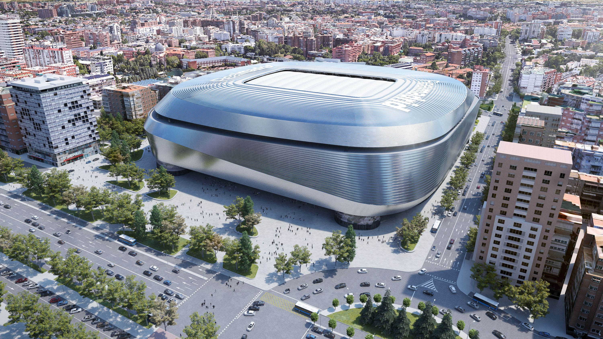
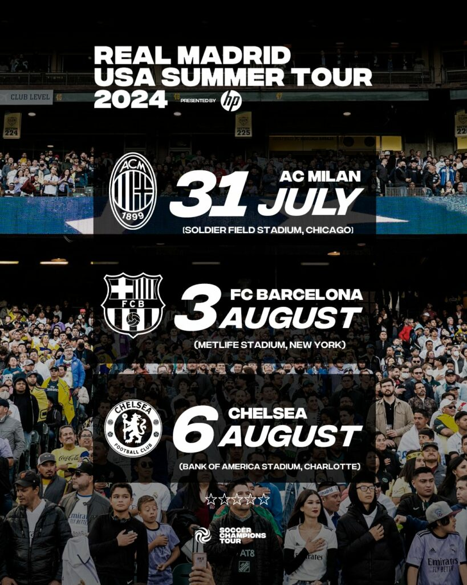

Últimas Noticias
Real Madrid ficha a joven promesa brasileña
El Real Madrid ha anunciado la incorporación de una nueva estrella brasileña a su plantilla. Con tan solo 18 años, el delantero ha impresionado a los ojeadores del club con su habilidad y velocidad.
Renovación del estadio Santiago Bernabéu
Las obras de renovación del estadio Santiago Bernabéu continúan a buen ritmo. Se espera que el nuevo estadio, con capacidad aumentada y tecnología de última generación, esté listo para la próxima temporada.
Pretemporada en Estados Unidos
El Real Madrid ha comenzado su pretemporada en Estados Unidos, donde enfrentará a varios equipos de la MLS en una serie de partidos amistosos. El entrenador espera que esto sirva para fortalecer al equipo antes del inicio de la temporada oficial.
